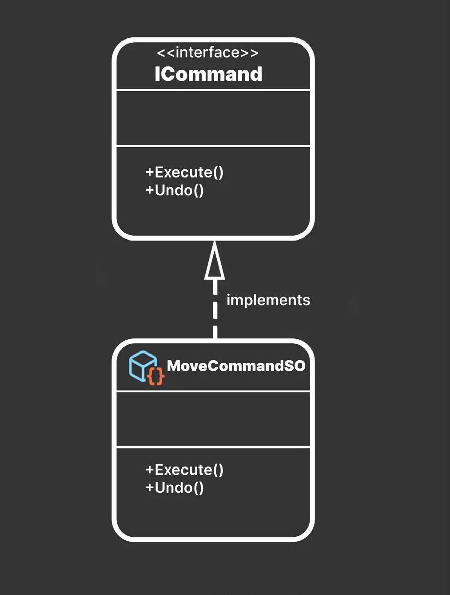
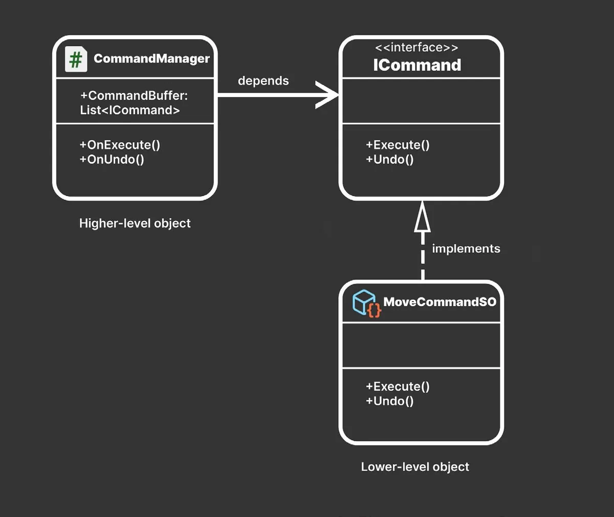
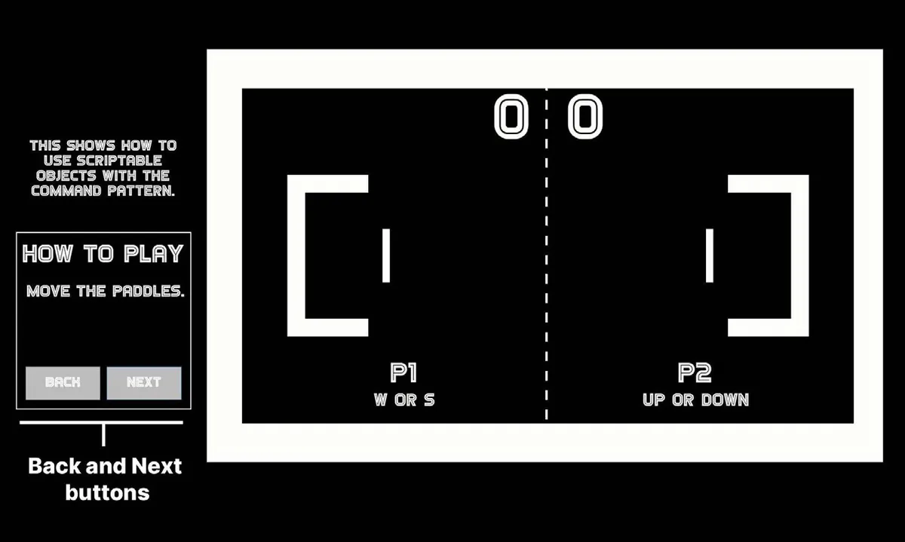

模式：命令（Command）
命令模式（Command Pattern）不直接调用方法，而是允许你把一个或多个方法调用封装成一个「命令对象（Command Object）」。
然后，你把这些命令对象存储在一个集合里，比如队列（Queue）或栈（Stack），这个集合就充当一个小型缓冲区。这样一来，你就能更灵活地控制每个命令对象的执行。常见的应用场景包括：按照特定的时间节奏回放一系列动作，或者让这些动作可以撤销。
你可能在一些喜欢的游戏类型中遇到过它：
- 在即时战略（Real-Time Strategy）游戏中，命令模式可以用来把单位和建筑的动作排队。随后，游戏会在资源到位时依次执行每个命令。
- 在回合制策略（Turn-Based Strategy）游戏中，玩家可以选中一个单位，然后把它的移动或动作存入队列或其他集合。回合结束时，游戏可以执行玩家队列中的所有命令。
- 在解谜（Puzzle）游戏中，命令模式可以让玩家撤销和重做动作。
- 在格斗（Fighting）游戏中，按照特定的命令列表读取按键或手柄动作，就能打出连招和特殊招式。
你可以用 ScriptableObject 来实现命令模式。例如，你可以创建一个命令来定义 Transform 的移动。把每个动作分别包装进独立的对象，能带来额外的控制力。
你会定义一个接口 ICommand，其中包含 Execute 方法和 Undo 方法（你也可以改用抽象类）：
public interface ICommand
{
public abstract void Execute();
public abstract void Undo();
}然后，让一个 ScriptableObject 实现 ICommand 接口。每个命令对象都用自己的实现细节来填充各自的 Execute 和 Undo 方法。

接着，MonoBehaviour 或 ScriptableObject 可以定义一个命令缓冲区（Command Buffer），用来存放命令对象。它可以是一个集合，比如列表（List）、栈（Stack）、数组（Array）或队列（Queue）。

这种简单的结构让你可以按顺序执行命令。想象一个教程或过场动画，它让某个 GameObject 按照一组预先规定的动作或动画移动，命令模式就非常适合这种场景。
由于每个命令都是独立的对象，重新排列它们很容易。你只需决定想如何维护这个 CommandBuffer：
- 如果把它做成栈，那么在执行命令时把命令压入（Push）栈中。撤销某个动作时，可以把它弹出（Pop），并另外维护一个重做栈。
- 如果使用列表或数组，就跟踪当前 Command 的索引，然后在需要撤销或重做命令时递增或递减该索引。
示例项目中的 MoveCommandSO 和 CommandManager 给出了一个可撤销移动的示例。在这个示例里，一个简易的教程场景为游戏棋盘的各个部分加上标签，用来讲解玩法。
点击 Next 按钮可以向前浏览说明文字。同样地，点击 Back 按钮可以反向循环浏览这些说明。

你可以在电子书《Level up your code with game programming patterns》中进一步了解命令模式。另外，也可以看看这篇社区文章《Command pattern with ScriptableObjects》，它演示了如何用 ScriptableObject 实现这一模式。
用 ScriptableObject 还是 C# 类？
在为项目决定合适的代码架构时，重要的是考虑团队的技能与偏好，以及游戏的性能需求。有些设计师可能更喜欢交互式地使用 Unity 编辑器，而另一些人可能更愿意完全用 C# 工作。
在创建一套团队里每个人都能轻松使用的代码库时，要把这些因素考虑进去。当然，没有任何一种设计模式是一劳永逸的解决方案，在实施之前仔细评估每种模式的优缺点很重要。
请记住，「正确」的代码架构，就是最适合你的团队和你的项目的那一种。